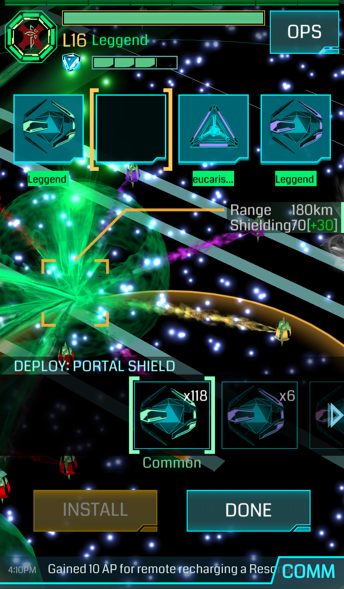

Modificatori da DIFESA
- PORTAL SHIELD: aumenta la difesa di un portale: Comune (+30%), Raro (+40%), Molto Raro(+60%) e AXA (+70%). Sebbene potrebbe sembrare una ottima idea usare un AXA Shield o un Portal Shield Molto Raro su un portale di livello basso o su un portale deploiato male per tentare di difenderlo, essaè una pessima scelta strategica in quanto le mod cadono quando cadono i risonatori. Se i risonatori sono di livello troppo basso o il portale è deploiato male, con qualche bomba i risonatori si scaricano e il portale non gode per nulla dell’effetto della mod, per questi motivi, meglio conservarle per scopi futuri.
- FORCE AMP: Raro, aumenta il danno inflitto da un portale verso il giocatore della squadra avversaria che lo attacca. Posizionarlo in combo con una turret o con un portal shield comune è la scelta migliore. Non posizionarne più di 1 a portale.
- TURRET: Raro, aumenta il numero di volte che il portale sotto attacco, attacca il giocatore della squadra avversaria. Posizionarlo in combo con una force ampo con un portal shield comune è la scelta migliore. Non posizionarne più di 1 a portale.
Modificatori da FARM
Su un portale senza mod, hai la possibilità di fare HACK ogni 5 minuti per un totale di 4 ogni 4 ore. Quindi, supponiamo che siano le 9:30 del mattino, facciamo subito un HACK, uno alle 9.35, poi alle 9.40 e l’ultimo alle 9.45. Fino alle 13.30 il portale non sarà più possibile fare hack. Gli hack possono anche essere distribuiti nell’arco delle 4 ore, quello che conta è l’orario del primo hack.
- HEAT SINK: diminuisce il cooldown di un portale tra un hack e quello successivo che di default è di 5 minuti. Inoltre, posizionarne uno resetta il numero di hack fatti fino a quel momento sul portale, quindi ne avrai altri 4 a disposizione, Attenzione però, questo vale solo per te! quindi se stai farmando oggetti con altre persone è preferibile posizionare un Multi Hack. Comune 20% (4 minuti di attesa), Raro 50% (2,5 minuti di attesa) e Molto Raro 70% (1,5 minuti di attesa); L’Heat Sinkpiù raro che viene posizionato sul portale diminuisce il tempo di cooldown del 100% del suo potenziale, il secondo di rarità uguale o inferiore, darà cooldown pari al 50% della sua efficacia
- MULTI HACK : aumenta il numero di hack possibili su un portale (default 4 ogni 4 ore dal primo hack. Comune +4 hack, Raro +8 hack, Molto Raro +12 hack. Il Multi Hack più raro che viene posizionato sul portale aumenta il numero di hack per il 100% del suo potenziale, il secondo di rarità uguale o inferiore, darà un numero di hack pari al 50% della sua efficacia
Modificatori STRATEGICI
- LINK AMP: Raro, serve ad aumentare la distanza che si può coprire con un link da un portale ad un altro. Il primo Link Amp posizionato sul portale raddoppia la gittata del link. Il secondo aumenta del 25%, il terzo e il quarto del 12.5%, per un totale massimo (occupando tutti e 4 gli slot) di 2x la gittata iniziale del portale.
- SOFTBANK ULTRA LINK: Molto Raro, serve ad aumentare la distanza che può coprire il link, la protezione che da un link ad un portale (detta mitigazione) e il numero di link in uscita da un portale (di default 8 link in uscita, infiniti in entrata) di 8 per ogni Ultra Link posizionato sul portale.